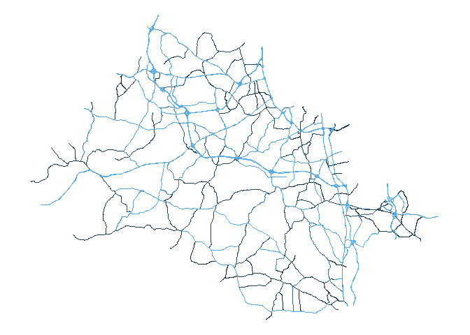

chestergeo provides an interface for accessing data from Chesterfield County’s OpenGeoSpace. This includes publicly-available data describing county infrastructure, school and voting boundaries, utility locations, and locations of police/fire/EMS responses, among others.
Installation
You can install chestergeo from Github via the following:
devtools::install_github("ccps-research-eval/chestergeo")Basic Usage
The core function provided by the package is get_geo_data(). This function takes a “layer” argument, which defines the OpenGeoSpace layer to retrieve data from. You can see all layers available in the available_layers object (as well as within the layers_crosswalk data).
For example, we might be interested in retrieving the middle school boundary data:
library(chestergeo)
ms_bounds <- get_geo_data("MiddleSchoolBoundary")## Reading layer `OGRGeoJSON' from data source
## `https://services3.arcgis.com/TsynfzBSE6sXfoLq/ArcGIS/rest/services/Administrative/FeatureServer/10/query?outFields=*&where=1%3D1&f=geojson'
## using driver `GeoJSON'
## Simple feature collection with 12 features and 6 fields
## Geometry type: MULTIPOLYGON
## Dimension: XY
## Bounding box: xmin: -77.87853 ymin: 37.21675 xmax: -77.24623 ymax: 37.56251
## Geodetic CRS: WGS 84This returns an sf object:
## Rows: 12
## Columns: 7
## $ OBJECTID <int> 1, 2, 3, 4, 5, 6, 7, 8, 9, 10, 11, 12
## $ SchoolName <chr> "TOMAHAWK CREEK", "SWIFT CREEK", "BAILEY BRIDGE", "SALEM~
## $ GlobalID <chr> "95041317-e635-413a-a32e-87856b245ce0", "2dff7f36-159a-4~
## $ SchoolNum <int> 88, 27, 63, 72, 87, 11, 42, 76, 32, 69, 67, 25
## $ Shape__Area <dbl> 292504601, 56354869, 292016506, 96218314, 186982820, 427~
## $ Shape__Length <dbl> 115768.99, 57269.36, 121169.37, 71727.80, 112616.58, 128~
## $ geometry <MULTIPOLYGON [°]> MULTIPOLYGON (((-77.64379 3..., MULTIPOLYGON (((-77.6221~We can then plot this object just as we would any other sf object.
library(ggplot2)
ggplot(ms_bounds) +
geom_sf(aes(fill = SchoolName)) +
labs(title = "CCPS Middle School Boundaries") +
theme_void()Likewise, if we wanted to see the major roads in the county:
roads <- get_geo_data("Major Roads")## Reading layer `OGRGeoJSON' from data source
## `https://services3.arcgis.com/TsynfzBSE6sXfoLq/ArcGIS/rest/services/Transportation/FeatureServer/6/query?outFields=*&where=1%3D1&f=geojson'
## using driver `GeoJSON'
## Simple feature collection with 208 features and 16 fields
## Geometry type: MULTILINESTRING
## Dimension: XY
## Bounding box: xmin: -77.86565 ymin: 37.22161 xmax: -77.27139 ymax: 37.57515
## Geodetic CRS: WGS 84
ggplot(roads) +
geom_sf(aes(color = OBJECTID)) +
theme_void() +
theme(
legend.position = "none"
)
Wrapping Functions
I am currently implementing some functions that wrap the get_geo_data() function so that users do not necessarily need to know the names of the layers they’re accessing (which names aren’t always super straightforward). Currently, the only wrapper function is get_school_boundaries(), which allows users to request school boundary lines.
The following code chunks do the same thing:
ms_bounds <- get_geo_data("MiddleSchoolBoundary")
#same as
ms_bounds2 <- get_school_boundaries(level = "middle")